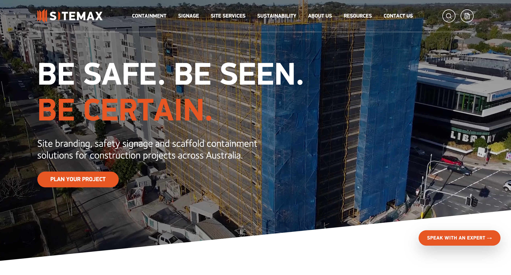

A website built around the customer.
Rethinking how Sitemax presents its products, services and expertise online, and making it easier for construction teams to find what they need.

Cropped screenshot of the live Sitemax website. View the actual website.
Google Analytics 4 | 1 July 2025 to 30 June 2026 compared with 1 July 2022 to 30 June 2023. Figures reflect overall website performance and are not attributed solely to the redevelopment.
Make the complex feel simple.
Sitemax supplies technical scaffold containment, construction signage and site services. Its website needed to communicate that breadth without making customers work hard to understand what was available or where to start.
The opportunity was to create a clearer path through the offering, with information that speaks to the needs of the people specifying, purchasing and using these solutions.
Shaping the experience, not writing the code.
I worked with external developers to plan and deliver the replacement website. My contribution covered the customer journey, site structure, wireframes, copywriting and creative assets, translating the business's offering into a clearer digital experience.
A better way to find, understand and enquire.
Good website work isn't just a redesign. It's about making a business easier to understand and easier to buy from. The result is a live website that brings Sitemax's products, services and customer needs together in one place.